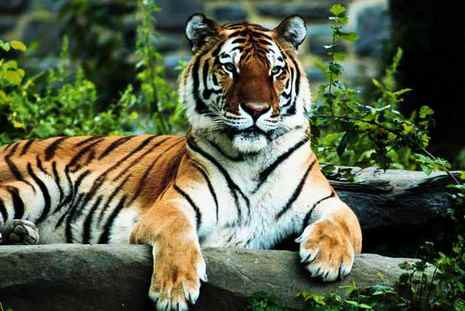
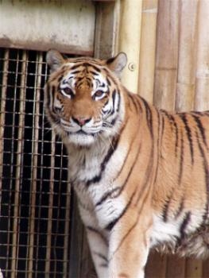
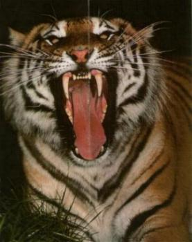

- HOME
- General
- Subdivision
- Looks
- Behaviour
- Senses
- Subspecies:
- Siberian tiger
- Bengal tiger
- Sumatran tiger
- Indochinese tiger
- South China tiger
- Caspian tiger
- Java tiger
- Bali tiger
- Hybrids:
- Liger
- Tigon
- Historisch:
- Saber tooth tiger
- Links


Relevant links:
The Siberian tiger
Panthera Tigris Altaica
The Siberian tiger originally lived in the East of Russia (East Siberia) and the northern part of Mongolia and China.
Meanwhile the population is driven back enormously, so presently they only occur in the area around the Amur river (East Russia). That's why the Siberian tiger is now often called the Amur tiger. There are approximately 450 specimens left of them in the wild.
This is the only tiger that lives in the snow (Siberia has severe winters and great differences in temperature between summer and winter). The Siberian tiger is therefore equipped with a thicker fur. His prey is mainly the greater animals that live there: multiple members of the deer family and wild boars.
Because animals in colder areas are on average bigger than their counterparts in less extreme places (this helps holding their body heat up, because the surface/volume ratio is smaller), Siberian tigers are the biggest subspecies of the tiger. He has a length of 2.7 to 3.8 meters (8.9 to 12.5 feet, females are a little smaller), the height of the withers is 105 to 110 centimeters (3.4 to 3.6 feet) and weighs between 250 and 280 kilograms (550 to 620 pounds).
 